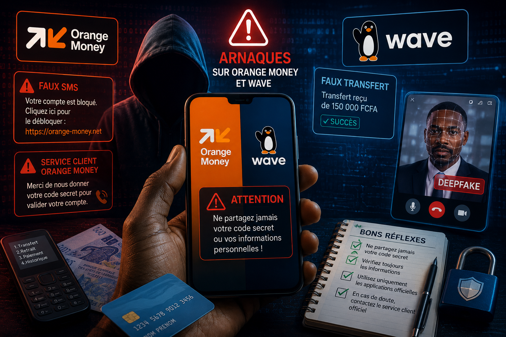

Orange Money et Wave : les arnaques qui piègent des milliers d'utilisateurs
par Babacar Dione de CyberShield • 19 juillet 2026 • 7 min de lecture

Les services de paiement mobile comme Orange Money et Wave facilitent aujourd'hui les transactions quotidiennes de millions de personnes. Grâce à eux, il est possible d'envoyer de l'argent, de payer ses factures ou d'effectuer des achats en quelques secondes. Cependant, cette popularité attire également les cybercriminels. Chaque année, de nombreux utilisateurs perdent de l'argent après avoir été victimes d'escroqueries de plus en plus convaincantes. Les fraudeurs exploitent principalement la confiance, la précipitation et le manque d'information de leurs victimes. Pour éviter ces pièges, il est essentiel de comprendre leurs méthodes
Les faux appels du service client
L'une des arnaques les plus fréquentes consiste à se faire passer pour un conseiller Orange Money ou Wave. Le fraudeur appelle la victime en utilisant un ton professionnel et affirme qu'un problème a été détecté sur son compte : une transaction suspecte, un compte bloqué, une mise à jour urgente ou encore un gain exceptionnel nécessitant une vérification. Afin de gagner la confiance de la victime, il peut connaître son nom, son numéro de téléphone ou d'autres informations publiques. Une fois la conversation engagée, l'escroc demande généralement des informations confidentielles comme le code secret du compte, un code reçu par SMS ou demande à la victime d'effectuer une manipulation sur son téléphone. Dès que ces informations sont obtenues, les fraudeurs peuvent tenter d'accéder au compte ou convaincre la victime d'autoriser elle-même une opération frauduleuse.
Comment éviter cette arnaque ?
- Ne communiquez jamais votre code secret.
- Ne partagez jamais un code reçu par SMS.
- Les services officiels ne demandent jamais votre code confidentiel par téléphone.
- En cas de doute, raccrochez et contactez vous-même le service client officiel.
Les faux SMS et faux liens
Les cybercriminels envoient également des SMS ou des messages WhatsApp prétendant provenir d'Orange Money ou de Wave. Ces messages annoncent souvent :
- un compte suspendu ;
- un remboursement ;
- une prime exceptionnelle(ils peuvent vous dire que vous avez gagneer des prix exorbitants) ;
- une vérification urgente.(la plus récurente)
Ils contiennent ensuite un lien qui ressemble à un site officiel. En réalité, ce lien conduit vers une fausse page où la victime est invitée à saisir ses identifiants ou d'autres informations personnelles. Une fois ces informations récupérées, elles peuvent être utilisées pour tenter de compromettre le compte de la victime ou préparer d'autres escroqueries.
Comment éviter cette arnaque ?
La meilleure protection consiste à ne jamais se fier uniquement à l'apparence d'un message ou d'un site Internet. Les cybercriminels créent souvent des pages qui ressemblent presque parfaitement aux plateformes officielles d'Orange Money ou de Wave. Avant de saisir une information personnelle, prenez quelques secondes pour vérifier l'adresse (URL) du site affichée dans la barre de votre navigateur. Les fraudeurs utilisent parfois des adresses très proches des véritables, en ajoutant un tiret, un chiffre ou une lettre supplémentaire afin de tromper les internautes. À première vue, ces différences peuvent passer inaperçues. Par exemple, un site frauduleux peut utiliser une adresse qui ressemble à l'originale, mais qui comporte une légère modification destinée à induire l'utilisateur en erreur. C'est pourquoi il est essentiel de lire attentivement l'adresse complète avant de poursuivre. Par ailleurs, ne cliquez jamais sur un lien reçu par SMS, WhatsApp, Messenger ou par e-mail, surtout s'il vous demande d'agir dans l'urgence. Si vous souhaitez accéder à votre compte, ouvrez directement l'application officielle ou saisissez vous-même l'adresse du site dans votre navigateur. Enfin, si un message vous annonce que votre compte est bloqué, qu'un remboursement vous attend ou qu'une récompense exceptionnelle est disponible, prenez le temps de vérifier l'information auprès du service client officiel avant d'effectuer la moindre manipulation.
Les faux transferts d'argent
Une autre méthode très répandue consiste à faire croire à la victime qu'elle a reçu un transfert par erreur. Le fraudeur contacte ensuite la victime en expliquant qu'il s'est trompé de numéro et lui demande de renvoyer immédiatement l'argent. Or, dans certains cas, le prétendu transfert n'a jamais été confirmé ou repose sur un faux justificatif de paiement. Sous la pression, certaines victimes envoient leur propre argent sans avoir réellement reçu le moindre transfert.
Comment éviter cette arnaque ?
- Vérifiez toujours votre solde directement dans votre application.
- Ne vous fiez jamais à une simple capture d'écran.
- Attendez que la transaction soit effectivement confirmée avant toute action.
Les fausses annonces sur les réseaux sociaux
Les réseaux sociaux sont également devenus un terrain privilégié pour les escrocs. Ils publient des offres très attractives :
- doublement de votre dépôt ;
- cadeaux exceptionnels ;
- cadeaux exceptionnels ;
- promotions limitées.
pour en bénéficier, la victime doit généralement effectuer un premier paiement. Après le transfert, les fraudeurs disparaissent ou réclament de nouveaux paiements.
Comment éviter cette arnaque?
- Méfiez-vous des offres qui semblent trop belles pour être vraies.
- Vérifiez toujours que la page est officielle.
- Ne versez jamais alors là au plus grand jamais d'argent pour obtenir une récompense promise.
Les fausses captures d'écran de paiement
Cette arnaque touche particulièrement les commerçants. Un client effectue un achat puis montre une capture d'écran indiquant qu'un paiement Orange Money ou Wave a été réalisé. Pressé ou distrait, le vendeur remet la marchandise sans vérifier que l'argent est réellement arrivé sur son compte. En réalité, la capture d'écran peut être falsifiée ou correspondre à une transaction annulée.
Comment éviter cette arnaque?
- Vérifiez toujours votre propre application.
- Confirmez que le montant apparaît effectivement sur votre compte.
- Ne remettez jamais un produit uniquement sur la base d'une capture d'écran.
Pourquoi ces arnaques fonctionnent-elles ?
Les cybercriminels ne s'appuient pas uniquement sur des techniques informatiques sophistiquées. Ils exploitent avant tout la psychologie humaine en jouant sur la peur, l'urgence ou encore la confiance. Par exemple, ils peuvent prétendre qu'un compte est bloqué, qu'un transfert doit être confirmé immédiatement ou qu'une récompense exceptionnelle attend la victime. Pris de court, certains utilisateurs agissent sans prendre le temps de vérifier les informations. Par ailleurs, l'intelligence artificielle est désormais utilisée pour rendre ces escroqueries encore plus crédibles. Grâce aux deepfakes, des fraudeurs peuvent créer de fausses vidéos ou imiter la voix d'une personne de confiance, comme un proche, un responsable d'entreprise ou un prétendu conseiller client. L'objectif est de convaincre la victime qu'elle parle réellement à une personne légitime afin de l'inciter à effectuer un transfert d'argent ou à divulguer des informations sensibles. Même si ces techniques restent moins fréquentes que les appels ou les SMS frauduleux, elles se développent rapidement et deviennent de plus en plus convaincantes. C'est pourquoi il est essentiel de ne jamais agir dans la précipitation. En cas de demande inhabituelle impliquant de l'argent ou des informations confidentielles, il est préférable de vérifier l'identité de son interlocuteur par un autre moyen avant de prendre une décision.
Conseils CyberShield
Les arnaques visant Orange Money et Wave évoluent constamment. Cependant, leur objectif reste toujours le même : vous pousser à révéler des informations confidentielles ou à effectuer vous-même une opération qui profitera aux fraudeurs. Pour renforcer votre sécurité :
- ne communiquez jamais votre code secret ou un code reçu par SMS ;
- utilisez exclusivement les applications officielles d'Orange Money et de Wave(plus sur et sécurisé) ;
- vérifiez chaque transaction directement dans votre application ;
- méfiez-vous des appels, SMS ou messages annonçant une urgence ou une récompense exceptionnelle(la plupart du temps ce sont les arnaqueurs qui sont derrières) ;
- ne prenez jamais de décision sous la pression ;
- signalez immédiatement toute tentative d'arnaque au service client officiel.
CyberShield rappelle que la meilleure protection reste la vigilance. En cas de doute, prenez quelques minutes pour vérifier les informations avant d'agir : ce simple réflexe peut suffire à éviter une fraude.